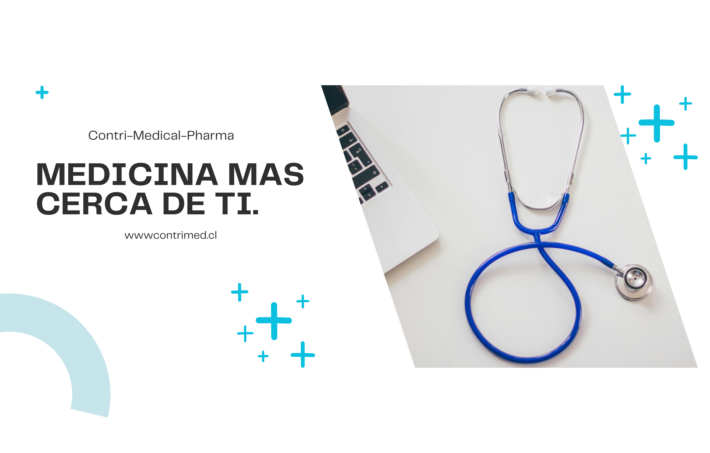

En Contri-Medical-Pharma, nos dedicamos a la vanguardia de la investigación médica y farmacéutica, buscando constantemente innovaciones que revolucionen la atención sanitaria. Nuestro equipo de científicos y expertos en salud trabaja incansablemente para descubrir nuevos tratamientos y terapias que mejoren la calidad de vida de las personas alrededor del mundo. Nuestras investigaciones se centran en el desarrollo de soluciones médicas avanzadas, desde medicamentos de última generación hasta tecnologías disruptivas en el campo de la medicina personalizada. Creemos firmemente en el poder de la colaboración y la transparencia, por lo que nos esforzamos por compartir nuestros hallazgos y avances con la comunidad médica global. Te invitamos a explorar nuestras investigaciones y a unirte a nosotros en este emocionante viaje hacia un futuro más saludable. En Contri-Medical-Pharma, no solo soñamos con un mundo mejor, trabajamos cada día para hacerlo realidad.
Some quick example text to build on the card title and make up the bulk of the card's content.
Procedimientos mínimamente invasivos con la ayuda de un robot de última generación
Diagnóstico o tratamiento de enfermedades, a través de pequeñas cantidades de material radioactivo